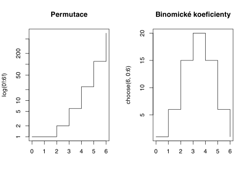

V software R jsou všechna základní rozdělení součástí balíku stats. A jejich výčet získáme vyvoláním nápovědy ?distributions. Pracovat s rozděleními budeme čtyřmi způsoby: - budeme generovat náhodná čísla z rozdělení - budeme pracovat s kvantilovou funkcí daného rozdělení - počítat s hustotou a pravděpododobnostní funkcí
Balík stats obsahuje mnoho rozdělení. Alternativní, Binomické, Multinomické, Poissonov, Normální, Fischerovo, \(\chi^2\), Studentovo \(t\) a mnohá další.
Pro ůplnost uvedeme funkce pro permutace factorial() a kombinace choose().
Kód
par(mfrow =c(1,2))plot(x =0:6, y =factorial(0:6), type ="s",main ="Permutace", ylab =bquote("log(0!:6!)"), xlab ="",log ="y")plot(x =0:6, y =choose(6, 0:6), type ="s", xlab ="",main ="Binomické koeficienty")

Kód
r___() # generování náhodných čísel z rozděleníd___() # funkce hustoty rozděleníp___() # Pravděpodobnostní funkce q___() # Kvantilová funkce rozdělení
7.1 Distribuční funkce rozdělení
Rozdělení pravděpodobnosti náhodné veličiny lze jednoznačně popsat tzv. distribuční funkcí {Rovnice 7.1}.
Kvantilová funkce je inverzní funkcí k distribuční.
7.4 Náhodná čísla
Pro generování náhodných čísel lze použít rozdělení.
Kód
runif(n =10, min =0, max =1)rpois(n =15, lambda =2.4)
1
Generování 10 čísel z rovnoměrného rozdělení z intervalu \((0;1)\)
2
Generování 15 čísel z Poisonova rozdělení z intervalu \((0;1)\)
Generovaná čísla nejsou náhodná v pravém slova smyslu, ale označují se jako pseudonáhodná, neboť při jejich tvorbě se vychází z jiste sekvence čísel. Tuto sekvenci je možné přímo zvolit, čímž je zajištěna